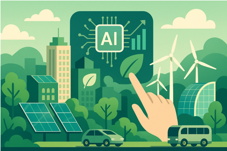
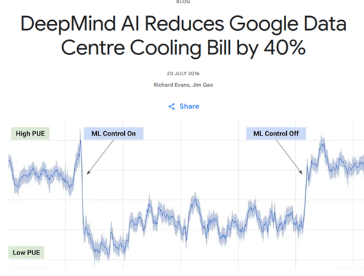
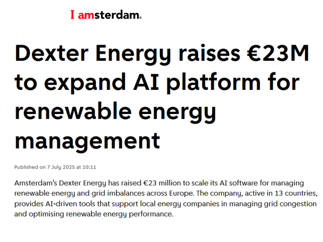

- Predicts demand & adjusts in real-time
- AI analyses patterns from sensors & meters
- Identifies inefficiencies humans often
The Role of Data & AI

Real World Examples
Use cases from smart grids, industrial automation, and building management systems.
 